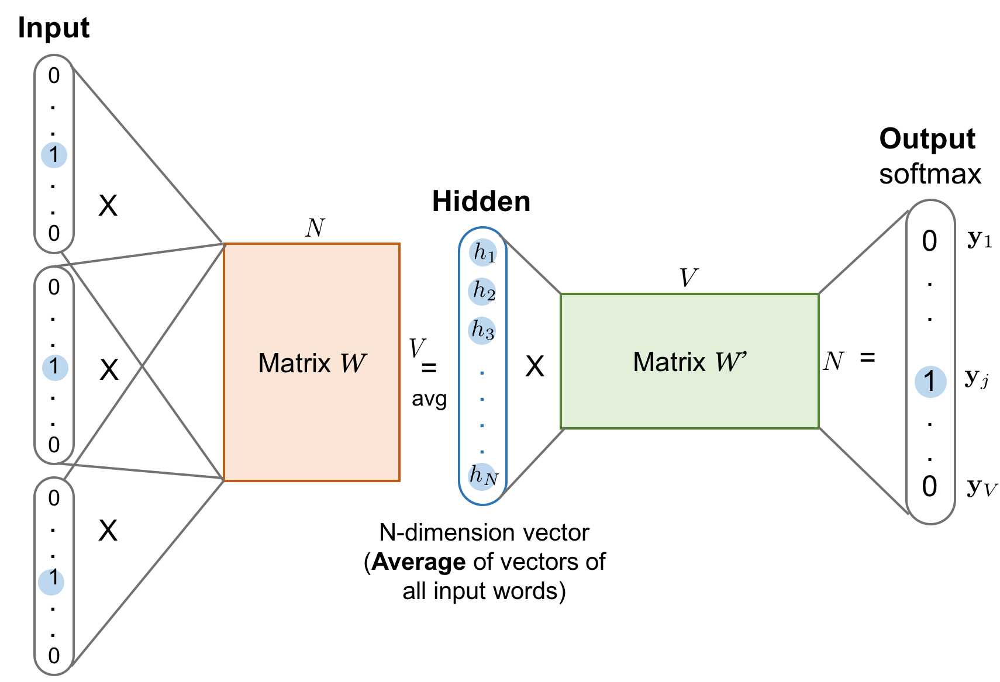
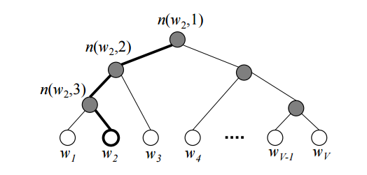

目录
词嵌入是将单词表示为稠密数值向量的一种方式。它可以通过多种语言模型来学习。这种词嵌入表示能够揭示单词之间许多隐藏的关系。例如，vector("cat") - vector("kitten") 与 vector("dog") - vector("puppy") 非常相似。本文将介绍几种学习词嵌入的模型，以及它们如何针对特定目标设计损失函数。
人类的词汇以自由文本形式出现。为了让机器学习模型能够理解和处理自然语言，我们需要将这些自由文本单词转换为数值形式。最简单的转换方法之一是采用 one-hot 编码，其中每个不同的单词对应结果向量中的一个维度，用二进制值 1 或 0 表示该单词是否出现。
然而，当面对整个词汇表时，one-hot 编码在计算上并不实用，因为它需要成百上千维的表示。词嵌入则用维度更低且更为稠密的数值向量（非二进制）来表示单词和短语。一个好的词嵌入应能近似反映单词之间的相似性（例如“cat”和“kitten”是相似词，因此在降维后的向量空间中它们应该距离较近），或者揭示隐藏的语义关系（例如“cat”与“kitten”的关系类似于“dog”与“puppy”）。上下文信息对于学习单词含义和关系非常有用，因为相似词往往会出现在相似的语境中。
学习词嵌入主要有两种方法，它们都依赖于上下文知识。
基于计数的向量空间模型
基于计数的向量空间模型高度依赖单词频率和共现矩阵，其假设是出现在相同上下文中的词具有相似或相关的语义含义。这些模型将邻近词之间的共现等基于计数的统计信息映射到小而稠密的词向量上。PCA、主题模型和神经概率语言模型都是这类方法的典型代表。
与基于计数的方法不同，基于上下文的方法会构建预测模型，直接以预测给定邻近词的目标词为目标。稠密的词向量是模型参数的一部分。每个单词的最佳向量表示是在模型训练过程中学习得到的。
基于上下文：Skip-Gram 模型
假设你有一个固定大小的滑动窗口沿着句子移动：位于中间的词是“目标词”，窗口内其左右两侧的词是上下文词。Skip-Gram 模型（Mikolov et al., 2013）被训练来预测给定目标词时某个词成为其上下文词的概率。
以下示例展示了一个 5 词窗口沿句子滑动后产生的多对目标词-上下文词训练样本。
“The man who passes the sentence should swing the sword.” – Ned Stark
| Sliding window (size = 5) | Target word | Context |
|---|---|---|
| [The man who] | the | man, who |
| [The man who passes] | man | the, who, passes |
| [The man who passes the] | who | the, man, passes, the |
| [man who passes the sentence] | passes | man, who, the, sentence |
| … | … | … |
| [sentence should swing the sword] | swing | sentence, should, the, sword |
| [should swing the sword] | the | should, swing, sword |
| [swing the sword] | sword | swing, the |
| {:.info} |
每个上下文-目标词对都被视为数据集中的一个新观测。例如，上例中的目标词“swing”会产生四个训练样本：(“swing”, “sentence”)、(“swing”, “should”)、(“swing”, “the”) 和 (“swing”, “sword”)。

给定词汇表大小 V，我们将学习维度为 N 的词嵌入向量。该模型每次用一个目标词（输入）来预测一个上下文词（输出）。
根据图 1，
基于上下文：连续词袋模型（CBOW）
连续词袋模型（CBOW）是另一种用于学习词向量的相似模型。它根据上下文词（例如“sentence should the sword”）来预测目标词（例如“swing”）。

由于存在多个上下文词，我们将它们对应的词向量（通过输入向量与矩阵 W 相乘得到）取平均。由于平均操作会平滑掉大量分布信息，有些人认为 CBOW 模型更适合小规模数据集。
损失函数
Skip-Gram 模型和 CBOW 模型都应当被训练以最小化设计良好的损失/目标函数。我们可以使用几种损失函数来训练这些语言模型。在下面的讨论中，我们将以 Skip-Gram 模型为例来说明如何计算损失。
Full Softmax
Skip-Gram 模型通过矩阵 W 定义每个词的嵌入向量，通过输出矩阵 W’ 定义上下文向量。给定输入词 w_I，我们将其在 W 中对应的行记为向量 v_{w_I}（嵌入向量），在 W’ 中对应的列记为 v’_{w_I}（上下文向量）。最终输出层使用 softmax 计算在给定 w_I 时预测输出词 w_O 的概率，因此：
上述公式在理论上是精确的。然而，当 V 极大时，每次对每个样本都遍历所有单词来计算分母在计算上是不现实的。对更高效的条件概率估计方法的需求催生了分层 softmax 等新技术。
Hierarchical Softmax
Morin 和 Bengio（2005）提出分层 softmax，利用二叉树结构加速求和计算。分层 softmax 将语言模型的输出 softmax 层编码成树状层次结构，每个叶节点代表一个单词，每个内部节点代表其子节点的相对概率。

每个词 w_i 都有一条从根节点到对应叶节点的唯一路径。选择该词的概率等价于沿着这条路径从根节点遍历树枝的概率。由于我们知道内部节点 n 的嵌入向量 v_n，得到该词的概率可以通过在每个内部节点处选择左转或右转的概率乘积来计算。
根据图 3，某个节点的概率为（\sigma 是 sigmoid 函数）：
给定输入词 w_I 得到上下文词 w_O 的最终概率为：
其中 L(w_O) 是通往单词 w_O 的路径深度，\mathbb{I}_{\text{turn}} 是一个特殊的指示函数，如果 n(w_O, k+1) 是 n(w_O, k) 的左子节点则返回 1，否则返回 -1。内部节点的嵌入向量是在模型训练过程中学习的。树状结构将分母估计的复杂度从 O(V)（词汇表大小）大幅降低到 O(log V)（树深度）。然而，在预测阶段，我们仍然需要计算每个单词的概率并选择最佳结果，因为我们无法提前知道要到达哪个叶节点。
一个好的树结构对模型性能至关重要。一些实用的原则包括：像 Huffman 树那样按词频分组以获得简单加速；将相似词分组到相同或相邻的分支中（例如使用预定义的词聚类或 WordNet）。
Morin 和 Bengio 使用 WordNet 中的同义词集作为树的聚类。Mnih 和 Hinton 则使用聚类算法递归地将单词划分为两个簇来学习树结构。
Cross Entropy
另一种方法完全避开了 softmax 框架。损失函数直接衡量预测概率 p 与真实二值标签 \mathbf{y} 之间的交叉熵。
首先回忆两个分布 p 和 q 之间的交叉熵定义为 H(p, q) = -\sum_x p(x) \log q(x) 。在本例中，只有当 w_i 是输出词时真实标签 y_i 才为 1，否则为 0。具有参数配置 \theta 的模型的损失函数 \mathcal{L}_\theta 旨在最小化预测值与真实值之间的交叉熵，因为较低的交叉熵意味着两个分布的高度相似性。y_j
回忆可得，
因此，
为了使用带动量的随机梯度下降（SGD）通过反向传播训练模型，我们需要计算损失函数的梯度。为简化起见，令 z_{IO} = {v’_{w_O}}^{\top}{v_{w_I}}。
其中 Q(\tilde{w}) 是噪声样本的分布。
根据上述公式，正确输出词通过第一项获得正向强化（\nabla_\theta z_{IO} 越大，损失越小），而其他词则通过第二项产生负面影响。
如何用一组噪声词样本来估计 \mathbb{E}_{w_i \sim Q(\tilde{w})} \nabla_\theta {v’_{w_i}}^{\top}{v_{w_I}}，而不是扫描整个词汇表，是使用基于交叉熵的采样方法的关键。
噪声对比估计（NCE）
噪声对比估计（NCE）指标旨在使用逻辑回归分类器来区分目标词与噪声样本（Gutmann and Hyvärinen, 2010）。
给定输入词 w_I，已知正确的输出词为 w。同时，我们从噪声样本分布 Q 中采样 N 个其他词，记为 \tilde{w}_1, \tilde{w}_2, \dots, \tilde{w}_N \sim Q。我们将二分类器的决策记为 d，$d$ 只能取二值。
当 N 足够大时，根据大数定律，
要计算概率 p(d=1 \vert w, w_I)，我们可以从联合概率 p(d, w \vert w_I) 开始。在 w, \tilde{w}_1, \tilde{w}_2, \dots, \tilde{w}_N 中，我们有 1/(N+1) 的概率选中真实词 w，它是从条件概率 p(w \vert w_I) 中采样的；同时我们有 N/(N+1) 的概率选中噪声词，每个都来自 q(\tilde{w}) \sim Q。因此，
然后我们可以得出 p(d=1 \vert w, w_I) 和 p(d=0 \vert w, w_I)：
最终 NCE 二分类器的损失函数变为：
然而，p(w \vert w_I) 的分母仍然需要对整个词汇表求和。令分母为输入词的配分函数 Z(w_I)。一个常见假设是 Z(w) \approx 1，因为我们期望 softmax 输出层是被归一化的（Minh and Teh, 2012）。于是损失函数简化为：
噪声分布 Q 是一个可调节的参数，我们希望将其设计为满足以下条件：
例如，TensorFlow 中 NCE 损失的采样实现（log_uniform_candidate_sampler）假设这类噪声样本服从对数均匀分布，也称为Zipf 定律。一个词在对数尺度上的概率预期与其按频率降序排列的排名成反比，高频词被赋予较低排名。在这种情况下，q(\tilde{w}) = \frac{1}{ \log V}(\log (r_{\tilde{w}} + 1) - \log r_{\tilde{w}})，其中 r_{\tilde{w}} \in [1, V] 是按频率降序排列的单词排名。
负采样（NEG）
Mikolov 等人（2013）提出的负采样（NEG）是 NCE 损失的一种简化版本。它特别因训练 Google 的 word2vec 项目而闻名。与试图近似最大化 softmax 输出对数概率的 NCE 损失不同，负采样做了进一步简化，因为它的重点是学习高质量的词嵌入，而不是建模自然语言中的词分布。
NEG 使用 sigmoid 函数近似二分类器的输出，如下所示：
最终的 NCE 损失函数如下：
学习词嵌入的其他技巧
Mikolov 等人（2013）提出了一些有助于获得良好词嵌入学习结果的实用技巧。
GloVe：全局向量
Pennington 等人（2014）提出的全局向量（GloVe）模型旨在将基于计数的矩阵分解与基于上下文的 Skip-Gram 模型结合起来。
我们都知道计数和共现能够揭示词的含义。为了与词嵌入中的 p(w_O \vert w_I) 区分开来，我们定义共现概率为：
C(w_i, w_k) 统计了单词 w_i 和 w_k 之间的共现次数。
假设我们有两个词 w_i=“ice”和 w_j=“steam”。第三个词 \tilde{w}_k=“solid”与“ice”相关但与“steam”无关，因此我们预期 p_{\text{co}}(\tilde{w}_k \vert w_i) 远大于 p_{\text{co}}(\tilde{w}_k \vert w_j)，从而 \frac{p_{\text{co}}(\tilde{w}_k \vert w_i)}{p_{\text{co}}(\tilde{w}_k \vert w_j)} 非常大。如果第三个词 \tilde{w}_k = “water”与两者都相关，或者 \tilde{w}_k = “fashion”与两者都无关，则 \frac{p_{\text{co}}(\tilde{w}_k \vert w_i)}{p_{\text{co}}(\tilde{w}_k \vert w_j)} 接近于 1。
这里的直觉是，词的含义是由共现概率的比率而非概率本身来捕捉的。全局向量将两个词相对于第三个上下文词的关系建模为：
进一步，由于目标是学习有意义的词向量，F 被设计为两个词 w_i - w_j 之间线性差的函数：
考虑到 F 在目标词和上下文词之间是对称的，最终解决方案是将 F 建模为指数函数。请阅读原始论文（Pennington et al., 2014）以了解更多方程细节。
最终，
由于第二项 -\log C(w_i) 与 k 无关，我们可以为 w_i 加入偏置项 b_i 来捕捉 -\log C(w_i)。为了保持对称形式，我们也为 \tilde{w}_k 加入偏置 \tilde{b}_k。
GloVe 模型的损失函数被设计为通过最小化平方误差之和来保持上述公式：
权重模式 f(c) 是 w_i 和 w_j 共现次数的函数，是模型的可调配置。它在 c \to 0 时应接近零；随着共现次数增加而非递减（更高的共现应有更大影响）；当 c 变得极大时应达到饱和。论文提出了以下权重函数。
示例：在《权力的游戏》上应用 word2vec
在回顾完上述所有理论知识后，让我们用从《权力的游戏》语料中提取的词嵌入做一个简单实验。使用 gensim 的过程非常简单直接。
步骤 1：提取单词
import sys
from nltk.corpus import stopwords
from nltk.tokenize import sent_tokenize
STOP_WORDS = set(stopwords.words('english'))
def get_words(txt):
return filter(
lambda x: x not in STOP_WORDS,
re.findall(r'\b(\w+)\b', txt)
)
def parse_sentence_words(input_file_names):
"""Returns a list of a list of words. Each sublist is a sentence."""
sentence_words = []
for file_name in input_file_names:
for line in open(file_name):
line = line.strip().lower()
line = line.decode('unicode_escape').encode('ascii','ignore')
sent_words = map(get_words, sent_tokenize(line))
sent_words = filter(lambda sw: len(sw) > 1, sent_words)
if len(sent_words) > 1:
sentence_words += sent_words
return sentence_words
# You would see five .txt files after unzip 'a_song_of_ice_and_fire.zip'
input_file_names = ["001ssb.txt", "002ssb.txt", "003ssb.txt",
"004ssb.txt", "005ssb.txt"]
GOT_SENTENCE_WORDS= parse_sentence_words(input_file_names)
步骤 2：训练 word2vec 模型
from gensim.models import Word2Vec
# size: the dimensionality of the embedding vectors.
# window: the maximum distance between the current and predicted word within a sentence.
model = Word2Vec(GOT_SENTENCE_WORDS, size=128, window=3, min_count=5, workers=4)
model.wv.save_word2vec_format("got_word2vec.txt", binary=False)
步骤 3：查看结果
在《权力的游戏》词嵌入空间中，与“king”和“queen”最相似的词分别是：
model.most_similar('king', topn=10)(word, similarity with ‘king’) |
model.most_similar('queen', topn=10)(word, similarity with ‘queen’) |
|---|---|
| (‘kings’, 0.897245) | (‘cersei’, 0.942618) |
| (‘baratheon’, 0.809675) | (‘joffrey’, 0.933756) |
| (‘son’, 0.763614) | (‘margaery’, 0.931099) |
| (‘robert’, 0.708522) | (‘sister’, 0.928902) |
| (’lords’, 0.698684) | (‘prince’, 0.927364) |
| (‘joffrey’, 0.696455) | (‘uncle’, 0.922507) |
| (‘prince’, 0.695699) | (‘varys’, 0.918421) |
| (‘brother’, 0.685239) | (’ned’, 0.917492) |
| (‘aerys’, 0.684527) | (‘melisandre’, 0.915403) |
| (‘stannis’, 0.682932) | (‘robb’, 0.915272) |
引用格式：
@article{weng2017wordembedding,
title = "Learning word embedding",
author = "Weng, Lilian",
journal = "lilianweng.github.io",
year = "2017",
url = "https://lilianweng.github.io/posts/2017-10-15-word-embedding/"
}
参考文献
[1] Tensorflow 教程 Vector Representations of Words。
[2] “Word2Vec Tutorial - The Skip-Gram Model” by Chris McCormick。
[3] “On word embeddings - Part 2: Approximating the Softmax” by Sebastian Ruder。
[4] Xin Rong. word2vec Parameter Learning Explained
[5] Mikolov, Tomas, Kai Chen, Greg Corrado, and Jeffrey Dean. “Efficient estimation of word representations in vector space.” arXiv preprint arXiv:1301.3781 (2013)。
[6] Frederic Morin and Yoshua Bengio. “Hierarchical Probabilistic Neural Network Language Model.” Aistats. Vol. 5. 2005。
[7] Michael Gutmann and Aapo Hyvärinen. “Noise-contrastive estimation: A new estimation principle for unnormalized statistical models.” Proc. Intl. Conf. on Artificial Intelligence and Statistics. 2010。
[8] Tomas Mikolov, Ilya Sutskever, Kai Chen, Greg Corrado, and Jeffrey Dean. “Distributed representations of words and phrases and their compositionality.” Advances in neural information processing systems. 2013。
[9] Tomas Mikolov, Kai Chen, Greg Corrado, and Jeffrey Dean. “Efficient estimation of word representations in vector space.” arXiv preprint arXiv:1301.3781 (2013)。
[10] Marco Baroni, Georgiana Dinu, and Germán Kruszewski. “Don’t count, predict! A systematic comparison of context-counting vs. context-predicting semantic vectors.” ACL (1). 2014。
[11] Jeffrey Pennington, Richard Socher, and Christopher Manning. “Glove: Global vectors for word representation.” Proc. Conf. on empirical methods in natural language processing (EMNLP). 2014。